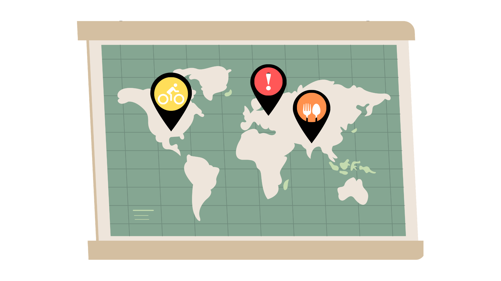

Bienvenue sur MapFinder

Outils permettant de :
Trouvez les stations de vélos des villes utilisant le réseau JCDecaux
Réservez dans les restaurants de Nancy
Informez-vous sur les travaux en cours à Nancy